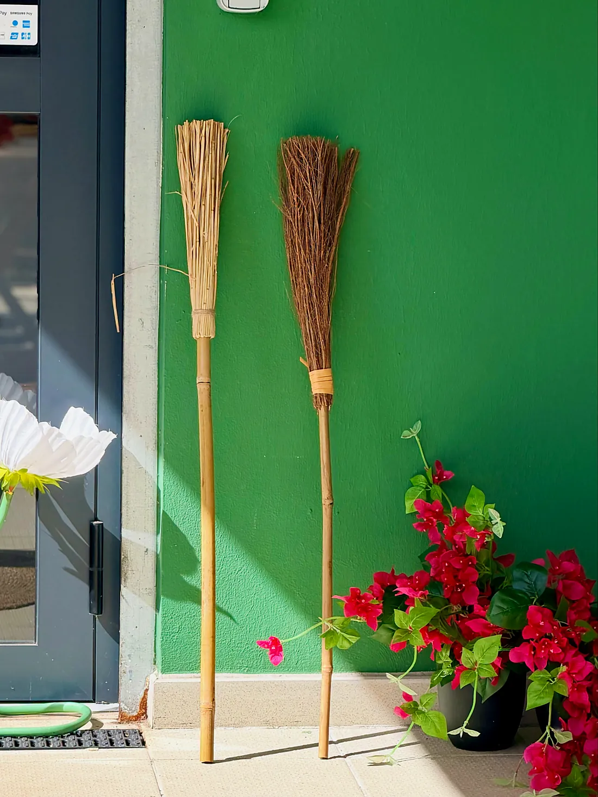
Coffee shop · Petite-Île, La Réunion
MargueriteCAFÉ
Une pause pour Soi : douceurs, déjeuners & gourmandises, autour d'un café de sélection.
65 rue Joseph Suacot, Petite-Île · 0693 22 48 54
L'histoire
Il était une fois… une tasse qui souriait
Un cocon au cœur du quartier
Marguerite Café a ouvert ses portes en juin 2025, à Petite-Île. Dès la première semaine, de belles rencontres et retrouvailles autour d'une tasse chaude.
« Un café de sélection qui fait du bien, des rires sincères et des petites douceurs à savourer en bonne compagnie. »
Fleurs fraîches sur le comptoir, tables couleur sauge, murs peints de grandes feuilles : un lieu pensé pour prendre le temps, le temps d'un café, d'un thé ou d'un latté.
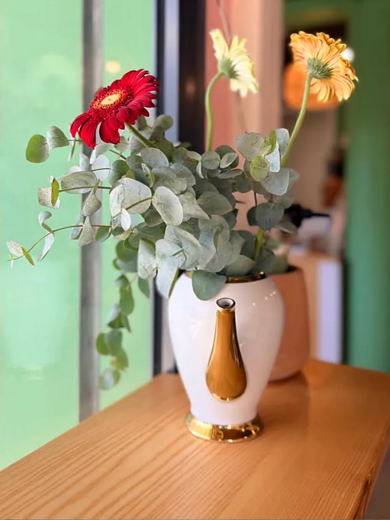
Douceurs & déjeuners
Ce qui vous attend sur le comptoir
Le menu change chaque jour, selon la saisonnalité des produits : il se découvre en story sur la page du café.
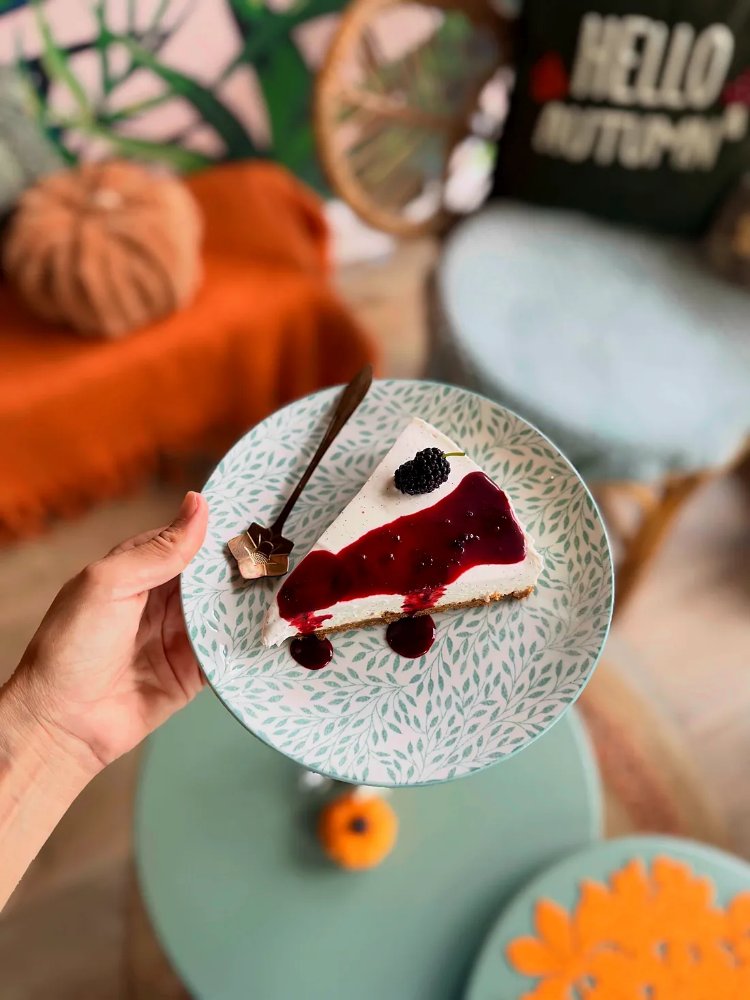
Faitmaison
Publié le 3 novembre 2026
Le cheesecake vanille Mïan Ha & ti mûriers du Potager la tit Île
« Si zot la loupé, lé enkor la… »
Une part fondante saveur vanille Mïan Ha, avec les mûres du Potager la tit Île : la gourmandise du moment, faite avec des produits d'ici.
Les douceurs du jourCafé, thé & latté
Un café de sélection, en cappuccino ou en latté macchiato, et de quoi faire une vraie pause thé.
Douceurs & gourmandises
Cheesecakes, cakes généreux, petites créations de saison : les douceurs changent au fil des jours.
Le déjeuner
Un menu du jour, au rythme des saisons, publié chaque jour en story.
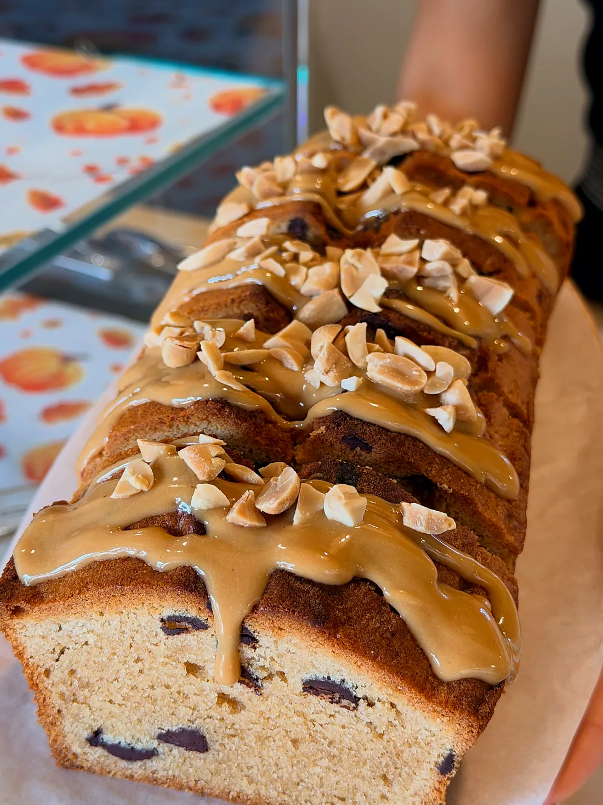
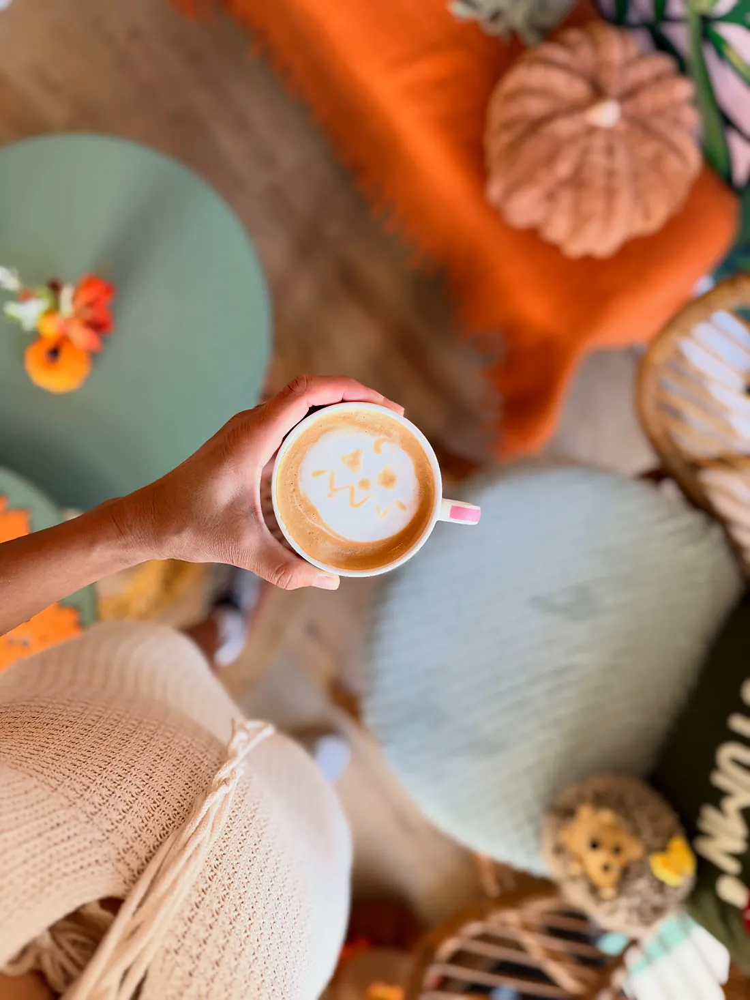
À la tasse
Cappuccino ou Latté macchiato ?
La grande question du samedi, posée par Marguerite elle-même. Ici, le café se choisit avec soin : un café de sélection, servi en tasses colorées, sur les petites tables sauge du café.
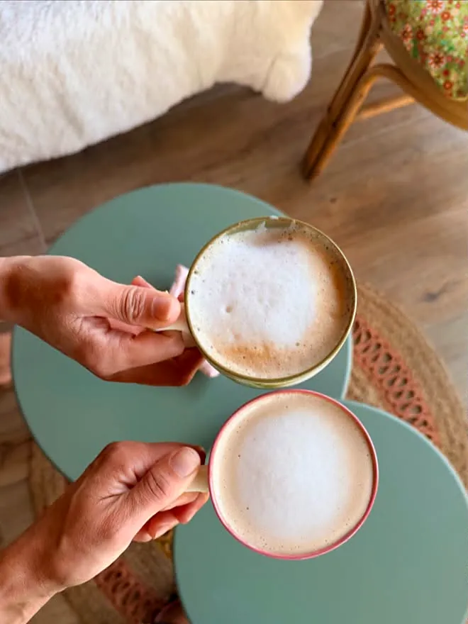
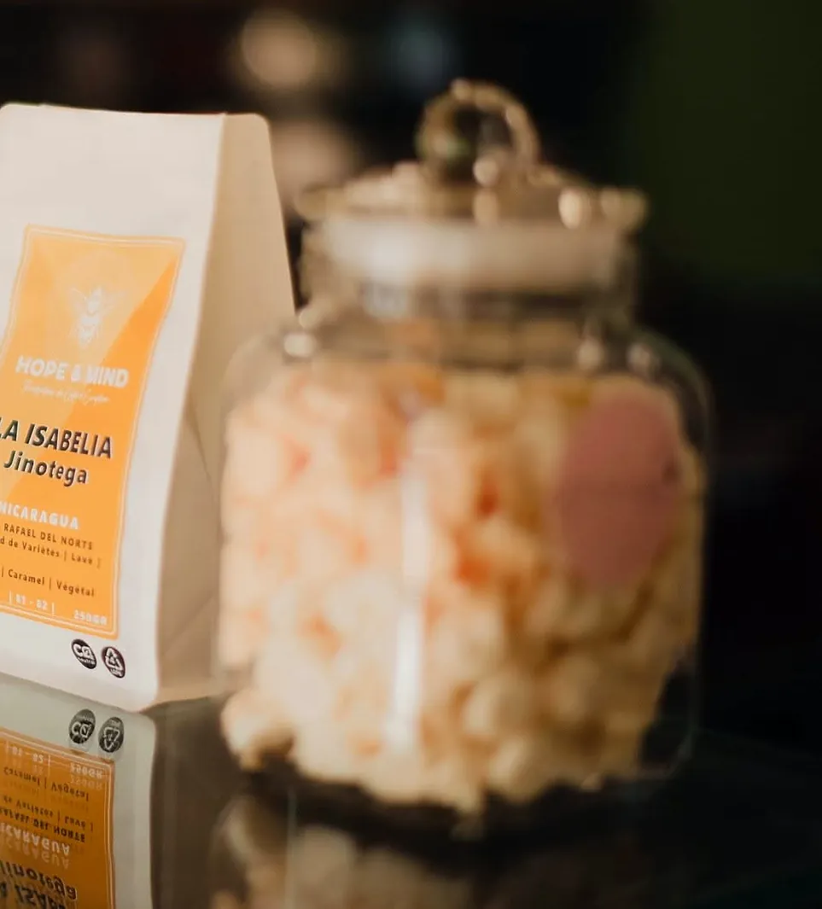
Deux cappuccinos & La Isabelia, Jinotega (Nicaragua), sur le comptoir
Une fois par mois
Le brunch mensuel
Chaque mois, le café prépare son brunch, sur réservation. L'édition d'octobre s'est tenue le samedi 31, aux couleurs d'Halloween. La prochaine s'annonce sur la page du café : réservez votre place par téléphone ou WhatsApp.
Réserver le prochain brunchAu fil des saisons
Des mignonneries faites main
Pour Halloween, le comptoir s'est rempli de sucettes citrouilles, de petits fantômes et de meringues orange : « passez au café vous équiper de mignonneries pour le weekend de fête ! »
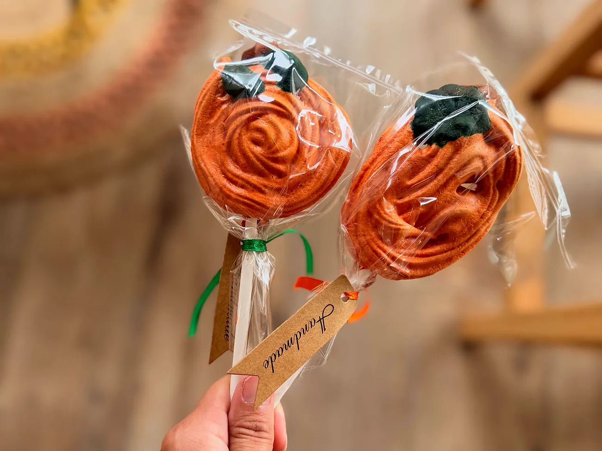
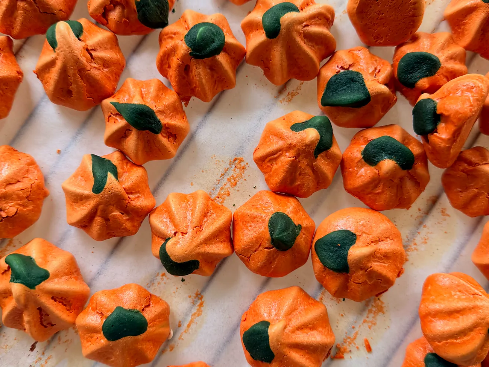
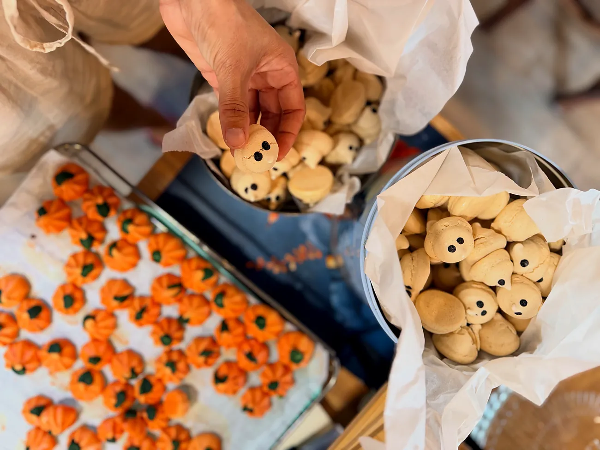
Faites glisser pour voir la suite →
En musique
Chaque publication a sa chanson
Sur la page du café, chaque douceur arrive avec sa bande-son. Quelques titres choisis par Marguerite cet automne :
Offrir pour Noël
Offrez une pause pour Soi
Pour Noël, offrez un moment chez Marguerite : un café, une douceur, un déjeuner, un brunch en famille. Le cadeau qui fait du bien, à Petite-Île.
Un moment au café à offrir
Un café et une douceur, ou un déjeuner : demandez au café comment l'offrir.
Des douceurs pour la table des fêtes
Des gourmandises de Marguerite pour vos repas de famille : demandez au café ce qui vous ferait plaisir.
Un brunch à partager
Une place au brunch du mois, pour se retrouver autour d'une belle table.
Venir au café
Ravie de vous accueillir
Adresse · 65 rue Joseph Suacot, 97429 Petite-Île
Parking · un grand parking gratuit à 50 m du café
Téléphone · 0693 22 48 54
E-mail · margueritecafe974@gmail.com
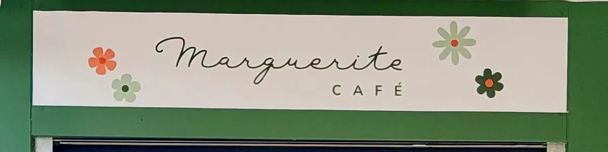